Anthropogenic CO2 from 1994 to 2007
Jens Daniel Müller
08 July, 2022
Last updated: 2022-07-08
Checks: 7 0
Knit directory: emlr_obs_preprocessing/
This reproducible R Markdown analysis was created with workflowr (version 1.7.0). The Checks tab describes the reproducibility checks that were applied when the results were created. The Past versions tab lists the development history.
Great! Since the R Markdown file has been committed to the Git repository, you know the exact version of the code that produced these results.
Great job! The global environment was empty. Objects defined in the global environment can affect the analysis in your R Markdown file in unknown ways. For reproduciblity it’s best to always run the code in an empty environment.
The command set.seed(20200707) was run prior to running the code in the R Markdown file. Setting a seed ensures that any results that rely on randomness, e.g. subsampling or permutations, are reproducible.
Great job! Recording the operating system, R version, and package versions is critical for reproducibility.
Nice! There were no cached chunks for this analysis, so you can be confident that you successfully produced the results during this run.
Great job! Using relative paths to the files within your workflowr project makes it easier to run your code on other machines.
Great! You are using Git for version control. Tracking code development and connecting the code version to the results is critical for reproducibility.
The results in this page were generated with repository version 6df29d5. See the Past versions tab to see a history of the changes made to the R Markdown and HTML files.
Note that you need to be careful to ensure that all relevant files for the analysis have been committed to Git prior to generating the results (you can use wflow_publish or wflow_git_commit). workflowr only checks the R Markdown file, but you know if there are other scripts or data files that it depends on. Below is the status of the Git repository when the results were generated:
Ignored files:
Ignored: .Rhistory
Ignored: .Rproj.user/
Ignored: data/
Ignored: output/
Unstaged changes:
Modified: code/Workflowr_project_managment.R
Note that any generated files, e.g. HTML, png, CSS, etc., are not included in this status report because it is ok for generated content to have uncommitted changes.
These are the previous versions of the repository in which changes were made to the R Markdown (analysis/read_Gruber_2019.Rmd) and HTML (docs/read_Gruber_2019.html) files. If you’ve configured a remote Git repository (see ?wflow_git_remote), click on the hyperlinks in the table below to view the files as they were in that past version.
| File | Version | Author | Date | Message |
|---|---|---|---|---|
| Rmd | 6df29d5 | jens-daniel-mueller | 2022-07-08 | checked netcdf files for reccap |
| html | af7d04d | jens-daniel-mueller | 2022-07-08 | Build site. |
| Rmd | ca773fa | jens-daniel-mueller | 2022-07-08 | expanded to Nordic Seas for RECCAP2 created netcdf files |
| html | a88dc1c | jens-daniel-mueller | 2022-07-08 | Build site. |
| Rmd | cfa55fb | jens-daniel-mueller | 2022-07-08 | expanded to Nordic Seas for RECCAP2 |
| html | bafeecc | jens-daniel-mueller | 2022-06-07 | Build site. |
| Rmd | 46f2c6b | jens-daniel-mueller | 2022-06-06 | included Nicos xover analysis for adjusted Knorr data |
| html | 8ae2eb9 | jens-daniel-mueller | 2022-04-26 | Build site. |
| Rmd | d145737 | jens-daniel-mueller | 2022-04-26 | write published, unmasked column inventories of G19 to files |
| html | e949567 | jens-daniel-mueller | 2022-04-13 | Build site. |
| html | aea9afe | jens-daniel-mueller | 2022-04-07 | Build site. |
| Rmd | af08e38 | jens-daniel-mueller | 2022-04-07 | rerun all with lat max 65N and without arcic |
| html | f088f55 | jens-daniel-mueller | 2022-04-01 | Build site. |
| html | dde77eb | jens-daniel-mueller | 2022-04-01 | Build site. |
| Rmd | a1ea47d | jens-daniel-mueller | 2022-04-01 | rerun all including arctic and North Atlantic biome |
| html | 6e65117 | jens-daniel-mueller | 2022-02-16 | Build site. |
| html | f2871b9 | jens-daniel-mueller | 2021-11-20 | Build site. |
| html | 0908ee5 | jens-daniel-mueller | 2021-11-15 | Build site. |
| html | 61af6e7 | jens-daniel-mueller | 2021-10-12 | Build site. |
| Rmd | 730f19a | jens-daniel-mueller | 2021-10-12 | prepare G19 data for RECCAP2 |
| html | 2dad8c7 | jens-daniel-mueller | 2021-10-12 | Build site. |
| Rmd | 1268707 | jens-daniel-mueller | 2021-10-12 | prepare G19 data for RECCAP2 |
| html | 6cef0b0 | jens-daniel-mueller | 2021-09-26 | Build site. |
| Rmd | 984ccac | jens-daniel-mueller | 2021-09-26 | read all Gruber 2019 cases |
| html | e49875a | jens-daniel-mueller | 2021-07-07 | Build site. |
| html | 6312bd4 | jens-daniel-mueller | 2021-07-07 | Build site. |
| Rmd | 4905409 | jens-daniel-mueller | 2021-07-07 | rerun with new setup_obs.Rmd file |
| html | 58bc706 | jens-daniel-mueller | 2021-07-06 | Build site. |
| Rmd | 0db89e1 | jens-daniel-mueller | 2021-07-06 | rerun with revised variable names |
1 Data source
- Anthropogenic CO2 estimates (1994-2007) by Gruber et al. (2019) downloaded in August 2020 from NOAA/NCEI Ocean Carbon Data System (OCADS)
2 Read nc files
Here, we use the standard case V101 for public and raw data sets.
2.1 Public data sets
The publicly available data sets contain only positive Cant estimates.
2.1.1 3d fields
# open file
dcant <- tidync(paste(
path_gruber_2019,
"dcant_emlr_cstar_gruber_94-07_vs1.nc",
sep = ""
))
# read gamma field as tibble
dcant <- dcant %>% activate(GAMMA_DENS)
dcant_gamma <- dcant %>% hyper_tibble()
# read delta cant field
dcant <- dcant %>% activate(DCANT_01)
dcant <- dcant %>% hyper_tibble()
# join cant and gamma fields
dcant <- left_join(dcant, dcant_gamma)
# harmonize column names and coordinates
dcant <- dcant %>%
rename(lon = LONGITUDE,
lat = LATITUDE,
depth = DEPTH,
gamma = GAMMA_DENS,
dcant_pos = DCANT_01)
dcant_3d_reccap <- dcant
dcant <- dcant %>%
mutate(lon = if_else(lon < 20, lon + 360, lon))
rm(dcant_gamma)2.1.2 Column inventories
dcant_inv_publ <- tidync(paste(
path_gruber_2019,
"inv_dcant_emlr_cstar_gruber_94-07_vs1.nc",
sep = ""
))
dcant_inv_publ <- dcant_inv_publ %>% activate(DCANT_INV01)
dcant_inv_publ <- dcant_inv_publ %>% hyper_tibble()
# harmonize column names and coordinates
dcant_inv_publ <- dcant_inv_publ %>%
rename(lon = LONGITUDE,
lat = LATITUDE,
dcant_pos = DCANT_INV01) %>%
mutate(lon = if_else(lon < 20, lon + 360, lon))dcant_inv_publ_all <- read_ncdf(
paste(
path_gruber_2019,
"inv_dcant_emlr_cstar_gruber_94-07_vs1.nc",
sep = ""
),
var = sprintf("DCANT_INV%02d", seq(1, 14, 1)),
make_units = FALSE
)
dcant_inv_publ_all <- dcant_inv_publ_all %>% as_tibble()
dcant_inv_publ_all <- dcant_inv_publ_all %>%
pivot_longer(DCANT_INV01:DCANT_INV14,
names_to = "Version_ID",
values_to = "dcant_pos",
names_prefix = "DCANT_INV")
# harmonize column names and coordinates
dcant_inv_publ_all <- dcant_inv_publ_all %>%
rename(lon = LONGITUDE,
lat = LATITUDE) %>%
mutate(lon = if_else(lon < 20, lon + 360, lon))2.2 Raw data
Internally available data sets also contain negative Cant estimates, as they are generated in the “raw” output of the eMLR mapping step.
# open v 101 file
V101 <- tidync(paste(path_gruber_2019,
"Cant_V101new.nc",
sep = ""))
# create tibble
V101 <- V101 %>% activate(Cant)
V101 <- V101 %>% hyper_tibble()
# harmonize column names and coordinates
V101 <- V101 %>%
rename(lon = longitude,
lat = latitude,
dcant = Cant) %>%
filter(dcant != -999) %>%
mutate(lon = if_else(lon < 20, lon + 360, lon))3 Apply basin mask
# use only three basin to assign general basin mask
# ie this is not specific to the MLR fitting
basinmask <- basinmask %>%
filter(MLR_basins == "2") %>%
select(lat, lon, basin_AIP)
dcant <- inner_join(dcant, basinmask)
dcant_inv_publ_masked <- inner_join(dcant_inv_publ, basinmask)
dcant_inv_publ_all <- inner_join(dcant_inv_publ_all, basinmask)
V101 <- inner_join(V101, basinmask)
ggplot() +
geom_tile(data = dcant_inv_publ,
aes(lon, lat, fill = "basin mask not applied")) +
geom_tile(data = dcant_inv_publ_masked,
aes(lon, lat, fill = "basin mask applied")) +
coord_quickmap()
| Version | Author | Date |
|---|---|---|
| 8ae2eb9 | jens-daniel-mueller | 2022-04-26 |
4 Join pos and all delta Cant
# join files
dcant_3d <- inner_join(dcant, V101)
rm(dcant, V101)5 Zonal mean section
dcant_zonal <- m_zonal_mean_sd(dcant_3d)6 Column inventory
6.1 Calculation
dcant_inv_layers <- m_dcant_inv(dcant_3d)
dcant_inv <- dcant_inv_layers %>%
filter(inv_depth == params_global$inventory_depth_standard)6.2 Plots
6.2.1 All Cant
p_map_cant_inv(
df = dcant_inv,
var = "dcant",
col = "divergent")
6.2.2 Pos Cant
p_map_cant_inv(
df = dcant_inv,
var = "dcant_pos")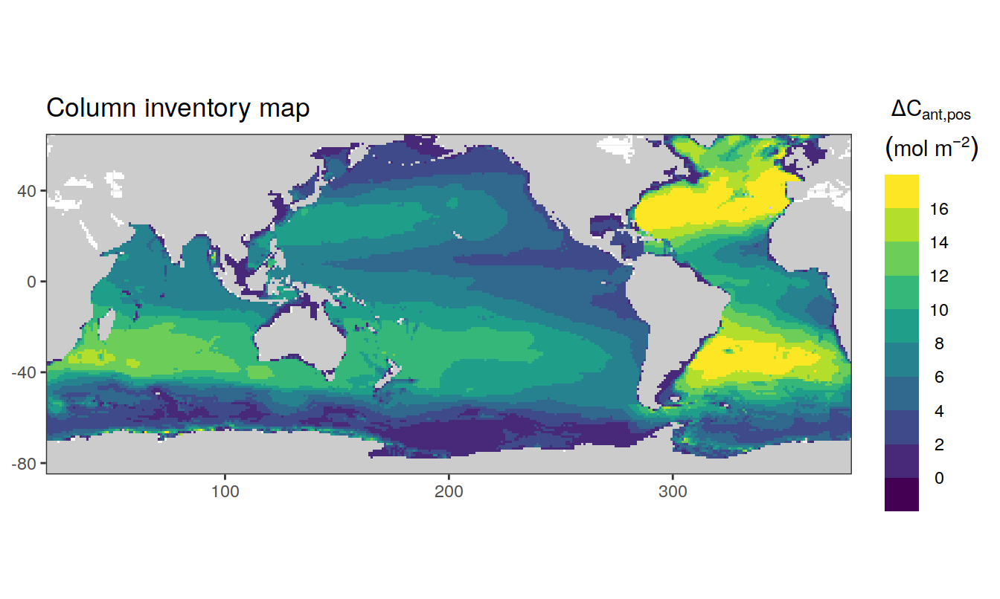
| Version | Author | Date |
|---|---|---|
| bafeecc | jens-daniel-mueller | 2022-06-07 |
| aea9afe | jens-daniel-mueller | 2022-04-07 |
| f088f55 | jens-daniel-mueller | 2022-04-01 |
| dde77eb | jens-daniel-mueller | 2022-04-01 |
| 0908ee5 | jens-daniel-mueller | 2021-11-15 |
| 2dad8c7 | jens-daniel-mueller | 2021-10-12 |
| 6cef0b0 | jens-daniel-mueller | 2021-09-26 |
| 58bc706 | jens-daniel-mueller | 2021-07-06 |
p_map_cant_inv(
df = dcant_inv_publ_all %>% mutate(dcant_pos = dcant_pos*(10/13)),
var = "dcant_pos") +
facet_wrap(~ Version_ID, ncol = 2)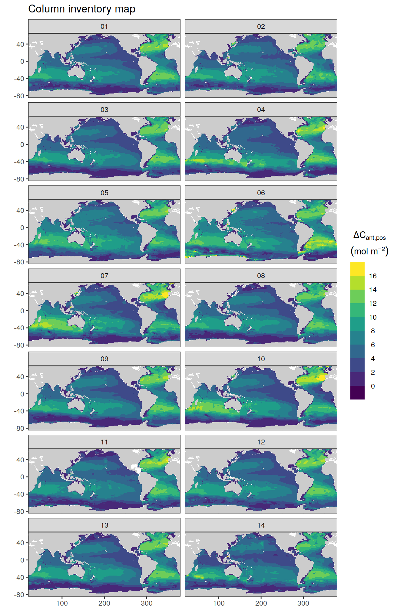
6.2.3 Published inventories
p_map_cant_inv(
df = dcant_inv_publ,
var = "dcant_pos",
title_text = "Published column inventories - unmasked")
| Version | Author | Date |
|---|---|---|
| bafeecc | jens-daniel-mueller | 2022-06-07 |
| 8ae2eb9 | jens-daniel-mueller | 2022-04-26 |
| aea9afe | jens-daniel-mueller | 2022-04-07 |
| f088f55 | jens-daniel-mueller | 2022-04-01 |
| dde77eb | jens-daniel-mueller | 2022-04-01 |
| 0908ee5 | jens-daniel-mueller | 2021-11-15 |
| 2dad8c7 | jens-daniel-mueller | 2021-10-12 |
| 6cef0b0 | jens-daniel-mueller | 2021-09-26 |
| 58bc706 | jens-daniel-mueller | 2021-07-06 |
p_map_cant_inv(
df = dcant_inv_publ_masked,
var = "dcant_pos",
title_text = "Published column inventories - masked")
6.2.4 Published vs calculated
# join published and calculated data sets
dcant_inv_offset <- inner_join(
dcant_inv %>% rename(dcant_re = dcant_pos),
dcant_inv_publ_masked %>% rename(dcant_pub = dcant_pos)
)
# calculate offset
dcant_inv_offset <- dcant_inv_offset %>%
mutate(dcant_offset = dcant_re - dcant_pub)
# plot map
p_map_cant_inv(
df = dcant_inv_offset,
var = "dcant_offset",
col = "bias",
breaks = seq(-3, 3, 0.25)
)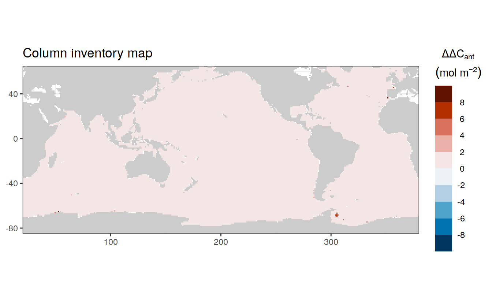
| Version | Author | Date |
|---|---|---|
| a88dc1c | jens-daniel-mueller | 2022-07-08 |
| bafeecc | jens-daniel-mueller | 2022-06-07 |
| 8ae2eb9 | jens-daniel-mueller | 2022-04-26 |
| aea9afe | jens-daniel-mueller | 2022-04-07 |
| f088f55 | jens-daniel-mueller | 2022-04-01 |
| dde77eb | jens-daniel-mueller | 2022-04-01 |
| 0908ee5 | jens-daniel-mueller | 2021-11-15 |
| 6cef0b0 | jens-daniel-mueller | 2021-09-26 |
| 58bc706 | jens-daniel-mueller | 2021-07-06 |
rm(dcant_inv_offset)7 Horizontal plane maps
7.1 All Cant
p_map_climatology(
df = dcant_3d,
var = "dcant",
col = "divergent")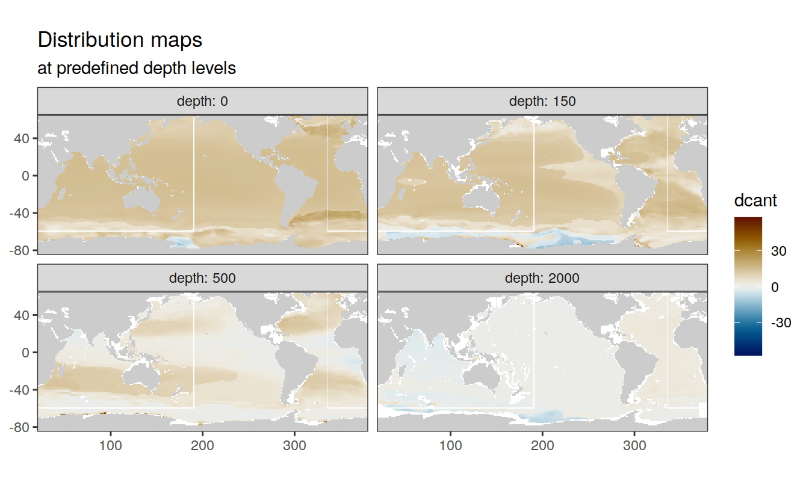
7.2 Positive Cant
p_map_climatology(
df = dcant_3d,
var = "dcant_pos")
8 Zonal mean section plot
8.1 Positive Cant
dcant_zonal %>%
group_split(basin_AIP) %>%
# head(1) %>%
map(
~ p_section_zonal(
df = .x,
var = "dcant_pos_mean",
plot_slabs = "n",
subtitle_text = paste("Basin:", unique(.x$basin_AIP))
)
)[[1]]
[[2]]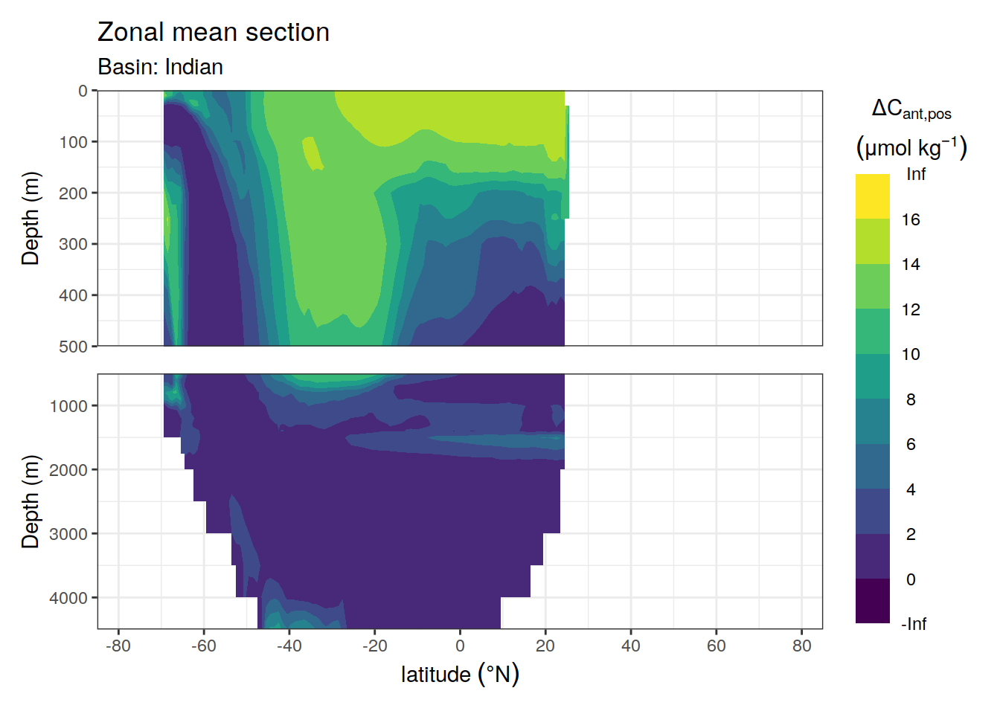
| Version | Author | Date |
|---|---|---|
| 8ae2eb9 | jens-daniel-mueller | 2022-04-26 |
[[3]]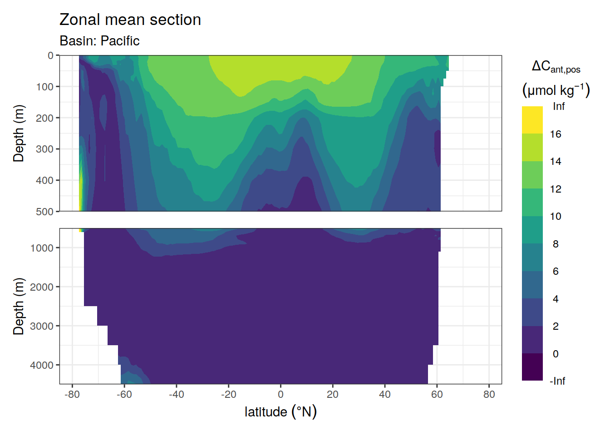
| Version | Author | Date |
|---|---|---|
| 8ae2eb9 | jens-daniel-mueller | 2022-04-26 |
9 Global sections plot
9.1 All Cant
p_section_global(
df = dcant_3d,
var = "dcant",
col = "divergent")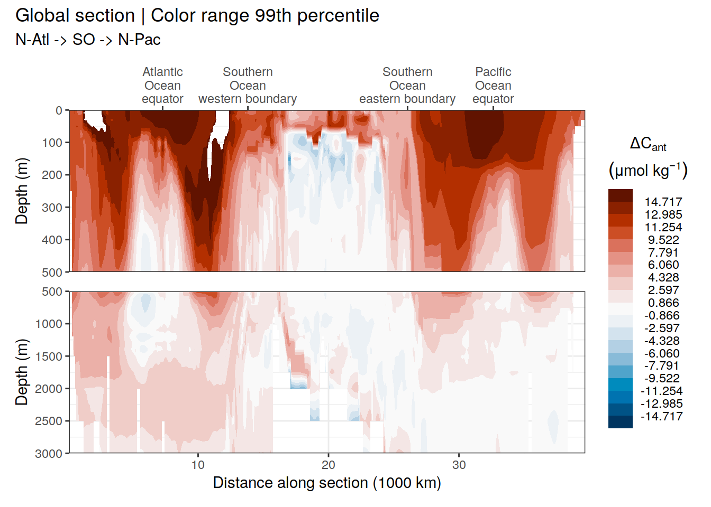
10 Sections at regular longitudes
10.1 All Cant
p_section_climatology_regular(
df = dcant_3d,
var = "dcant",
col = "divergent")
10.2 Positive Cant
p_section_climatology_regular(
df = dcant_3d,
var = "dcant_pos")
11 Write files
dcant_3d %>%
write_csv(paste(path_preprocessing,
"G19_dcant_3d.csv",
sep = ""))
dcant_inv %>%
write_csv(paste(path_preprocessing,
"G19_dcant_inv.csv",
sep = ""))
dcant_inv_publ %>%
write_csv(paste(path_preprocessing,
"G19_dcant_inv_publ.csv",
sep = ""))
dcant_inv_publ_all %>%
write_csv(paste(path_preprocessing,
"G19_dcant_inv_all.csv",
sep = ""))
dcant_zonal %>%
write_csv(paste(path_preprocessing,
"G19_dcant_zonal.csv",
sep = ""))12 RECCAP2-ocean submission
12.1 Read WOA18
path_woa2018 <- "/nfs/kryo/work/updata/woa2018/"
WOA18 <- tidync(paste(
path_woa2018,
"temperature/decav/1.00/woa18_decav_t00_01.nc",
sep = ""
))
WOA18 <- WOA18 %>%
hyper_tibble()
WOA18 <- WOA18 %>%
distinct(lat, lon, depth)
WOA18 <- WOA18 %>%
mutate(lon = if_else(lon < 0, lon + 360, lon))12.2 Read RECCAP2 biome mask
path_basin_mask <-
"/nfs/kryo/work/updata/reccap2/"
region_masks_all <-
read_ncdf(paste(
path_basin_mask,
"RECCAP2_region_masks_all_v20220620.nc",
sep = ""
)) %>%
as_tibble()
region_masks_all <- region_masks_all %>%
select(-seamask)
region_masks_all <- region_masks_all %>%
pivot_longer(open_ocean:southern,
names_to = "region",
values_to = "value") %>%
mutate(value = as.factor(value))
region_masks_all %>%
filter(value != 0,
region == "atlantic") %>%
ggplot(aes(lon, lat, fill = region)) +
geom_raster() +
scale_fill_brewer(palette = "Dark2") +
coord_quickmap(expand = 0)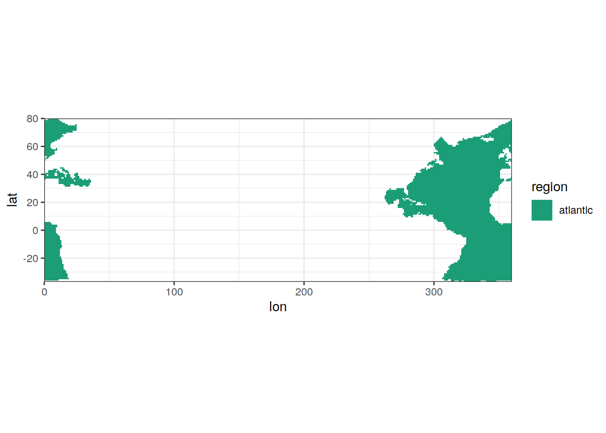
| Version | Author | Date |
|---|---|---|
| a88dc1c | jens-daniel-mueller | 2022-07-08 |
region_masks_atlantic <-
region_masks_all %>%
filter(value != 0,
region == "atlantic")
region_masks_open_ocean <-
region_masks_all %>%
filter(value != 0,
!(region %in% c("open_ocean", "arctic")))
rm(region_masks_all)12.3 Extensions to N-Atlantic
dcant_3d <- dcant_3d_reccap %>%
filter(depth <= 3000)
ggplot() +
geom_tile(data = region_masks_atlantic,
aes(lon, lat, fill = region), alpha = 0.6) +
geom_tile(data = dcant_3d %>% distinct(lon, lat),
aes(lon, lat, fill = "G19"), alpha = 0.6) +
scale_fill_brewer(palette = "Dark2") +
coord_quickmap(expand = 0)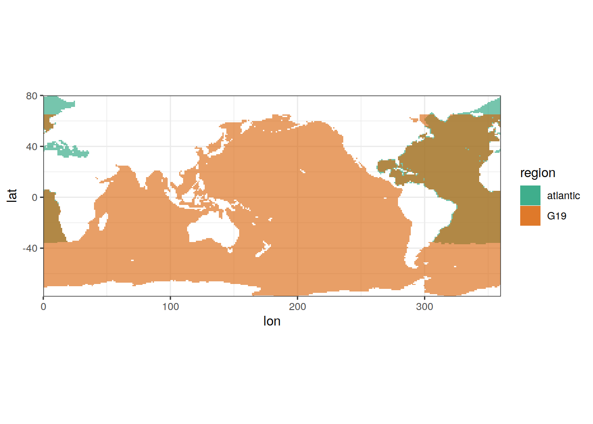
| Version | Author | Date |
|---|---|---|
| a88dc1c | jens-daniel-mueller | 2022-07-08 |
ggplot() +
geom_tile(data = region_masks_open_ocean,
aes(lon, lat, fill = "region"), alpha = 0.6) +
geom_tile(data = dcant_3d %>% distinct(lon, lat),
aes(lon, lat, fill = "G19"), alpha = 0.6) +
scale_fill_brewer(palette = "Dark2") +
coord_quickmap(expand = 0)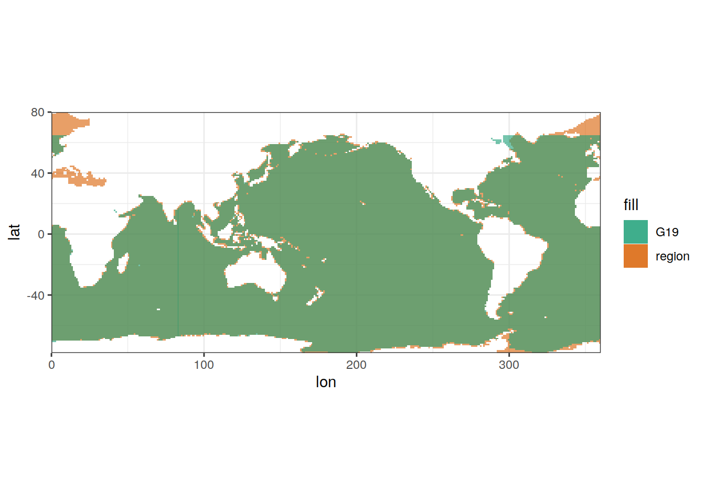
| Version | Author | Date |
|---|---|---|
| a88dc1c | jens-daniel-mueller | 2022-07-08 |
dcant_3d <- inner_join(dcant_3d,
region_masks_open_ocean %>% distinct(lon, lat))
ggplot() +
geom_tile(data = region_masks_atlantic %>% filter(lat > 64),
aes(lon, lat, fill = region), alpha = 0.6) +
geom_tile(data = dcant_3d %>% distinct(lon, lat),
aes(lon, lat, fill = "G19"), alpha = 0.6) +
scale_fill_brewer(palette = "Dark2") +
coord_quickmap(expand = 0)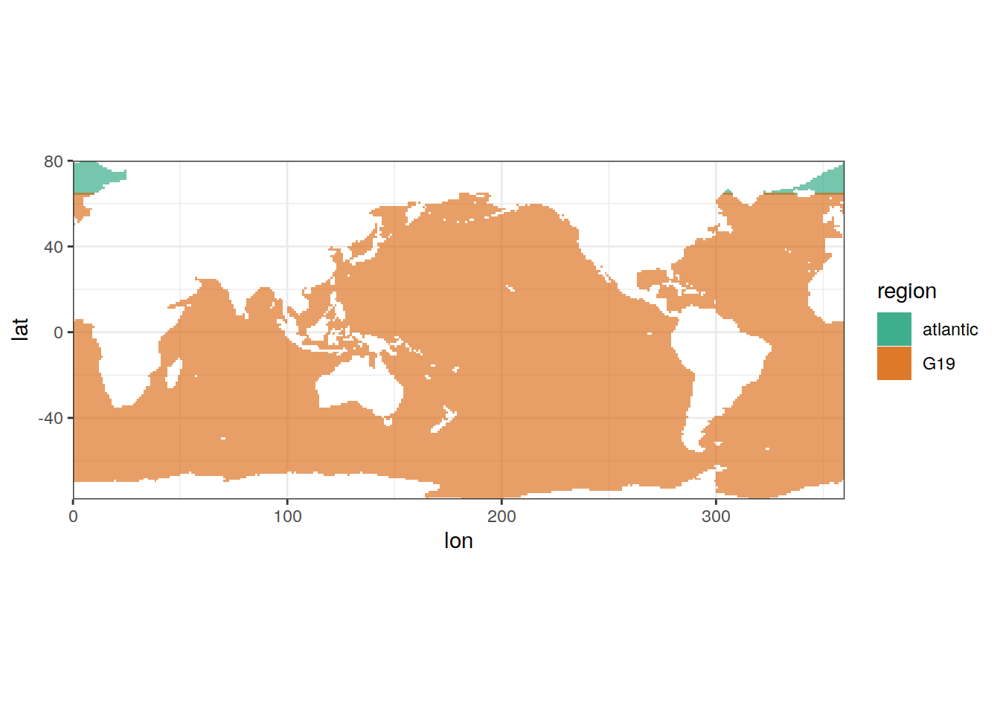
| Version | Author | Date |
|---|---|---|
| a88dc1c | jens-daniel-mueller | 2022-07-08 |
ggplot() +
geom_tile(data = region_masks_atlantic %>% filter(lat > 64),
aes(lon, lat, fill = region), alpha = 0.6) +
geom_tile(data = WOA18 %>% distinct(lon, lat),
aes(lon, lat, fill = "WOA18"), alpha = 0.6) +
scale_fill_brewer(palette = "Dark2") +
coord_quickmap(expand = 0)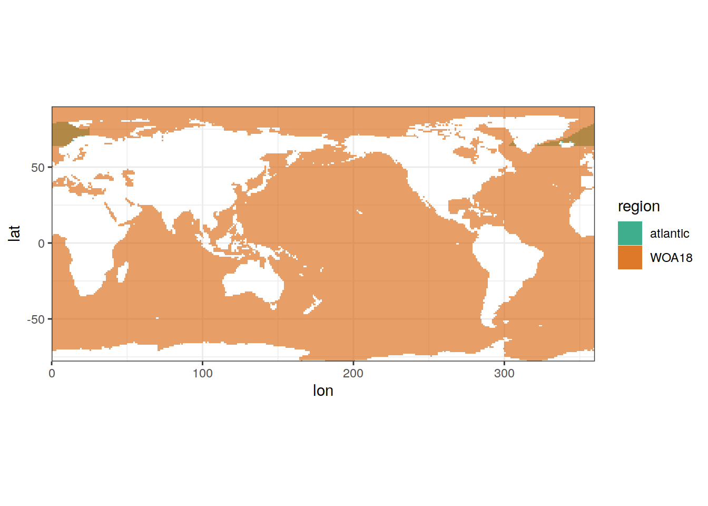
| Version | Author | Date |
|---|---|---|
| a88dc1c | jens-daniel-mueller | 2022-07-08 |
NA_basin_WOA18 <- left_join(
region_masks_atlantic %>% filter(lat > 62) %>% distinct(lon, lat),
WOA18
)
ggplot() +
geom_tile(data = region_masks_atlantic,
aes(lon, lat),
alpha = 0.6) +
geom_tile(
data = NA_basin_WOA18 %>%
group_by(lon, lat) %>%
summarise(depth = max(depth)) %>%
ungroup(),
aes(lon, lat, fill = depth)
) +
scale_fill_viridis_c(direction = -1) +
coord_quickmap(expand = 0)
| Version | Author | Date |
|---|---|---|
| a88dc1c | jens-daniel-mueller | 2022-07-08 |
NA_basin_WOA18 <- NA_basin_WOA18 %>%
filter(depth %in% unique(dcant_3d$depth))
dcant_3d_boundary <- inner_join(
NA_basin_WOA18,
dcant_3d
)
dcant_3d_boundary %>%
ggplot(aes(dcant_pos, depth, col = lon)) +
geom_point() +
scale_color_viridis_c() +
scale_y_reverse()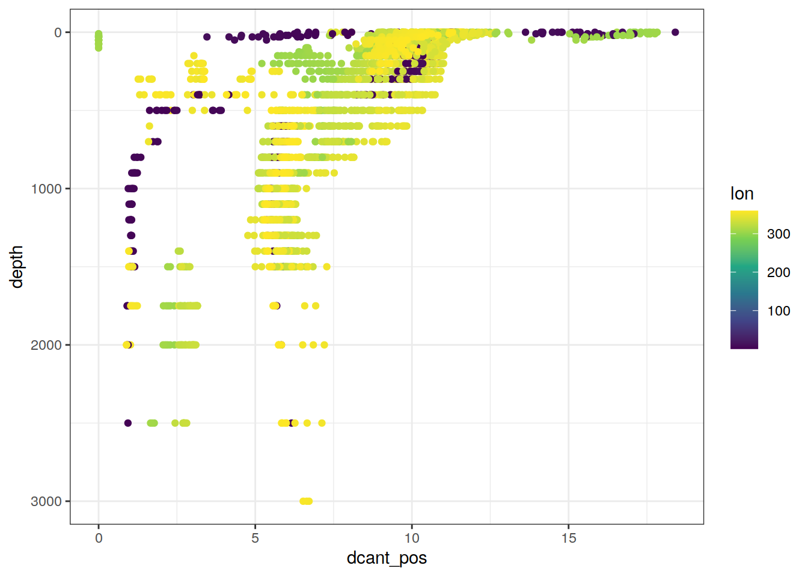
| Version | Author | Date |
|---|---|---|
| a88dc1c | jens-daniel-mueller | 2022-07-08 |
dcant_3d_boundary %>%
ggplot(aes(gamma, depth, col = lon)) +
geom_point() +
scale_color_viridis_c() +
scale_y_reverse()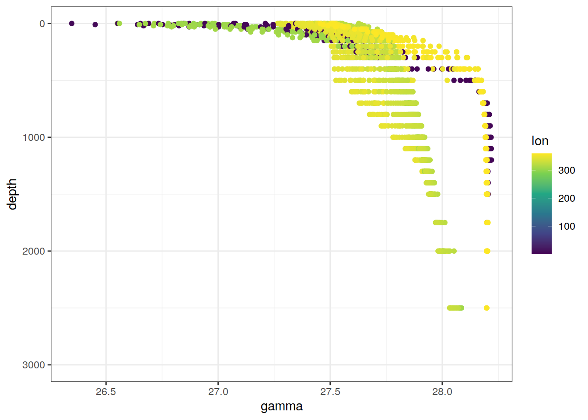
| Version | Author | Date |
|---|---|---|
| a88dc1c | jens-daniel-mueller | 2022-07-08 |
dcant_boundary_profile <- dcant_3d_boundary %>%
group_by(depth) %>%
summarise(dcant_pos = mean(dcant_pos, na.rm = TRUE),
gamma = mean(gamma, na.rm = TRUE)) %>%
ungroup()
dcant_boundary_profile %>%
ggplot() +
geom_point(aes(dcant_pos, depth, fill="dcant_pos")) +
geom_point(aes(gamma, depth, fill="gamma")) +
scale_color_viridis_c() +
scale_y_reverse()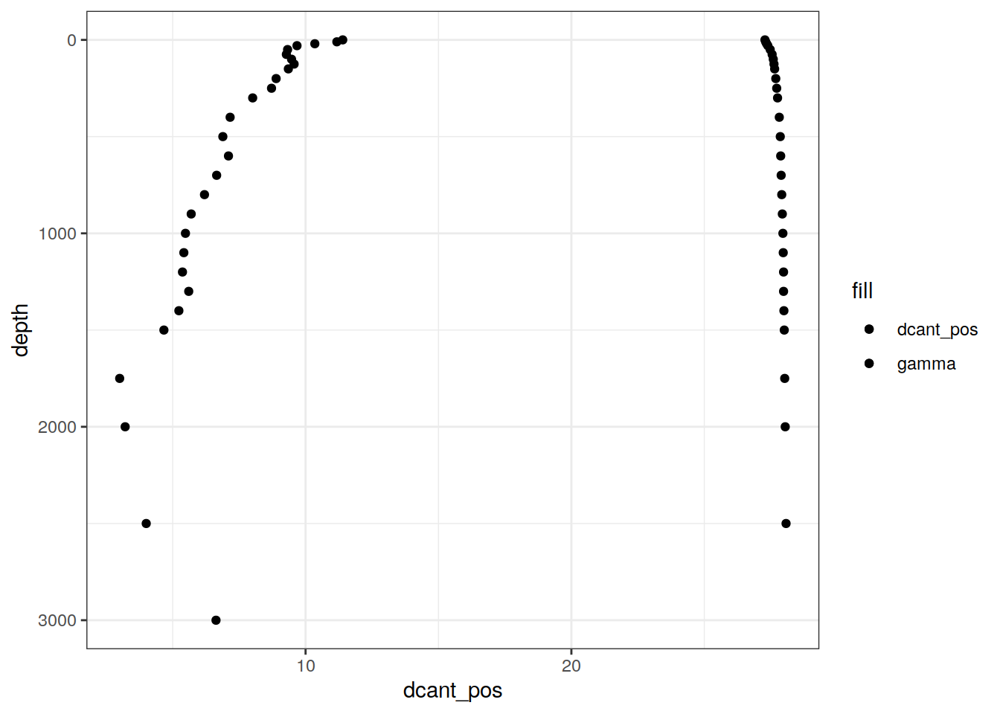
dcant_boundary_profile <- dcant_boundary_profile %>%
mutate(dcant_pos = if_else(depth >= 2000, min(dcant_pos), dcant_pos))
dcant_boundary_profile <- dcant_boundary_profile %>%
mutate(gamma = if_else(is.na(gamma), max(gamma, na.rm = TRUE), gamma))
NA_basin_WOA18 <- full_join(NA_basin_WOA18 %>% filter(lat > 65),
dcant_boundary_profile)
dcant_3d <-
bind_rows(dcant_3d,
NA_basin_WOA18)
dcant_3d <-
dcant_3d %>%
group_by(depth, lon) %>%
arrange(lat) %>%
fill(gamma, .direction = "down") %>%
ungroup() %>%
group_by(lat, lon) %>%
arrange(depth) %>%
fill(gamma, .direction = "downup") %>%
ungroup()
ggplot() +
geom_tile(data = region_masks_open_ocean,
aes(lon, lat, fill = "region"), alpha = 0.6) +
geom_tile(data = dcant_3d %>%
filter(is.na(gamma)) %>%
distinct(lon, lat),
aes(lon, lat, fill = "G19 - no gamma"), alpha = 0.6) +
scale_fill_brewer(palette = "Dark2") +
coord_quickmap(expand = 0)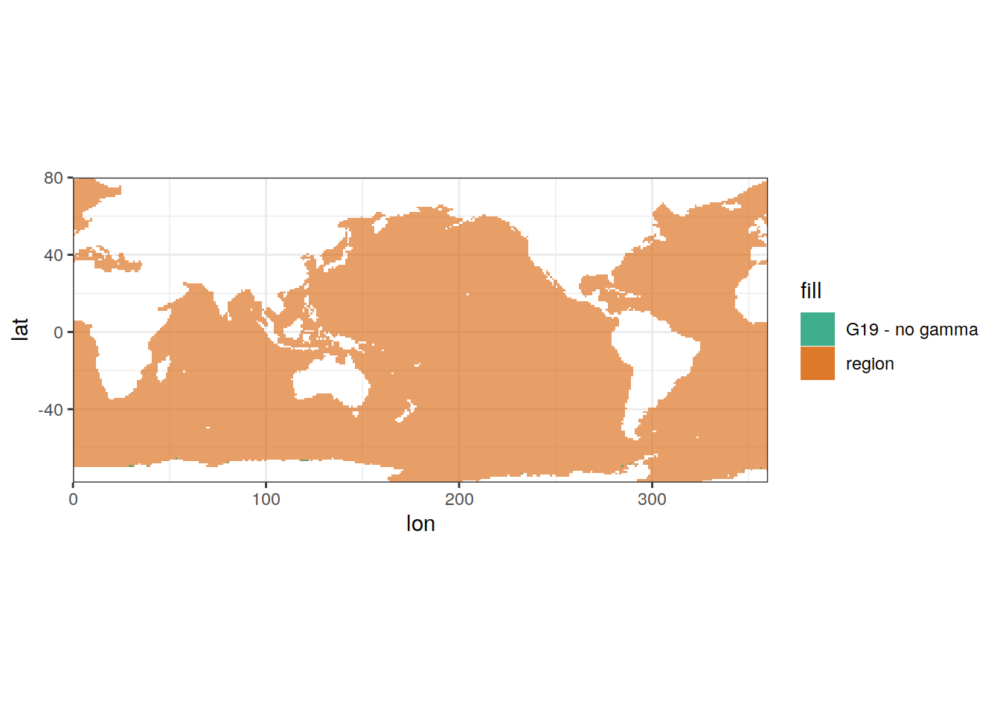
13 Column inventory
13.1 Calculation
dcant_inv_layers <- m_dcant_inv(dcant_3d %>% mutate(dcant = 0,
basin_AIP = "global"))
dcant_inv <- dcant_inv_layers %>%
filter(inv_depth == params_global$inventory_depth_standard)13.2 Map
dcant_inv %>%
ggplot(aes(lon, lat, fill = dcant_pos)) +
geom_tile() +
scale_fill_viridis_c() +
coord_quickmap(expand = 0)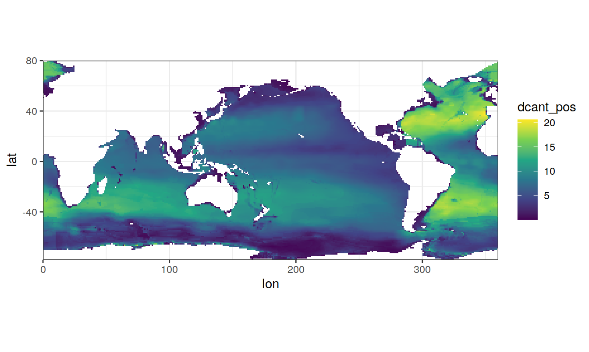
| Version | Author | Date |
|---|---|---|
| a88dc1c | jens-daniel-mueller | 2022-07-08 |
13.3 Write netcdf
# extract coordinate reference system
G19_raster <- raster::brick(paste0(
path_gruber_2019,
"dcant_emlr_cstar_gruber_94-07_vs1.nc"))
coord_ref <- raster::crs(G19_raster)
rm(G19_raster)
# open nc file for data extraction
dcant_nc <- tidync(paste(
path_gruber_2019,
"dcant_emlr_cstar_gruber_94-07_vs1.nc",
sep = ""
))
# read delta cant field
dcant <- dcant_nc %>%
activate(DCANT_01) %>%
hyper_tibble(na.rm = FALSE)
# read delta cant field
gamma <- dcant_nc %>%
activate(GAMMA_DENS) %>%
hyper_tibble(na.rm = FALSE)
# join gamma and dcant
dcant <- full_join(dcant, gamma)
rm(gamma)
# harmonize column names and coordinates
dcant <- dcant %>%
rename(lon = LONGITUDE,
lat = LATITUDE,
depth = DEPTH,
dcant = DCANT_01,
gamma = GAMMA_DENS) %>%
mutate(gamma = if_else(is.na(dcant), NaN, gamma))
dcant <-
full_join(dcant_3d,
dcant %>%
filter(depth <= 3000) %>%
distinct(lat, lon, depth))
# convert dcant unit from "µmol kg-1" to "mol m-3"
dcant <- dcant %>%
rename(dcant = dcant_pos) %>%
mutate(dens = (1000 + gamma) / 1000,
dcant = dcant * dens * 1e-3)
# create volume grid
dcant <- dcant %>%
m_layer_thickness() %>%
mutate(surface_area = marelac::earth_surf(lat, lon),
volume = layer_thickness * surface_area,
volume = if_else(is.na(dcant), NaN, volume))
# check total volume
dcant %>%
filter(depth <= 3000) %>%
summarise(total_ocean_volume = sum(volume, na.rm = TRUE))# A tibble: 1 × 1
total_ocean_volume
<dbl>
1 8.95e17# check total dcant
dcant %>%
filter(depth <= 3000) %>%
mutate(dcant_inv = dcant * volume) %>%
summarise(total_dcant = sum(dcant_inv, na.rm = TRUE)*12*1e-15)# A tibble: 1 × 1
total_dcant
<dbl>
1 31.6# select relevant columns
dcant <- dcant %>%
select(lon, lat, depth, dcant, volume)
# create raster objects
volume_raster <- dcant %>%
select(lon, lat, volume) %>%
base::split(dcant$depth) %>%
lapply(raster::rasterFromXYZ) %>%
raster::brick() %>%
raster::setZ(z = unique(dcant$depth), name = "volume")
dcant_raster <- dcant %>%
select(lon, lat, dcant) %>%
base::split(dcant$depth) %>%
lapply(raster::rasterFromXYZ) %>%
raster::brick() %>%
raster::setZ(z = unique(dcant$depth), name = "dcant")
# assign coordinate reference system
raster::crs(dcant_raster) <- coord_ref
raster::crs(volume_raster) <- coord_ref
# assign NA values
raster::NAvalue(dcant_raster) <- -9999
raster::NAvalue(dcant_raster)[1] -9999raster::NAvalue(volume_raster) <- -9999
raster::NAvalue(volume_raster)[1] -9999# check object
dim(dcant_raster)[1] 180 360 28raster::nbands(dcant_raster)[1] 1raster::nlayers(dcant_raster)[1] 28names(dcant_raster) #get the names of layers [1] "X0" "X10" "X20" "X30" "X50" "X75" "X100" "X125" "X150"
[10] "X200" "X250" "X300" "X400" "X500" "X600" "X700" "X800" "X900"
[19] "X1000" "X1100" "X1200" "X1300" "X1400" "X1500" "X1750" "X2000" "X2500"
[28] "X3000"raster::getZ(dcant_raster) [1] 0 10 20 30 50 75 100 125 150 200 250 300 400 500 600
[16] 700 800 900 1000 1100 1200 1300 1400 1500 1750 2000 2500 3000# write netcdf file
raster::writeRaster(
dcant_raster,
filename = paste0(path_preprocessing,
"dcant_Gruber2019_1994-2007_v20220608.nc"),
overwrite = T
)
raster::writeRaster(
volume_raster,
filename = paste0(path_preprocessing,
"volume_Gruber2019_1994-2007_v20220608.nc"),
overwrite = T
)
# modify created netcdf files
library(ncdf4)
# dcant file
# open file in writing mode
dcant_reopen <- nc_open(
paste0(path_preprocessing,
"dcant_Gruber2019_1994-2007_v20220608.nc"),
write = TRUE)
dcant_reopenFile /nfs/kryo/work/jenmueller/emlr_cant/observations/preprocessing/dcant_Gruber2019_1994-2007_v20220608.nc (NC_FORMAT_CLASSIC):
2 variables (excluding dimension variables):
int crs[]
proj4: +proj=longlat +datum=WGS84 +no_defs
float dcant[longitude,latitude,z]
_FillValue: -3.39999995214436e+38
grid_mapping: crs
proj4: +proj=longlat +datum=WGS84 +no_defs
min: 0
min: 0
min: 0
min: 0
min: 0
min: 0
min: 0
min: 0
min: 0
min: 0
min: 0
min: 0
min: 0
min: 0
min: 0
min: 0
min: 0
min: 0
min: 0
min: 0
min: 0
min: 0
min: 0
min: 0
min: 0
min: 0
min: 0
min: 0
max: 0.0248421741701018
max: 0.0263988532810143
max: 0.0259323226992999
max: 0.0468319294577161
max: 0.0539228878337458
max: 0.0579115449847562
max: 0.0591300899669754
max: 0.0595068498539064
max: 0.0591967236903614
max: 0.0622757641709907
max: 0.0701156483511376
max: 0.0822125437177265
max: 0.0895806756023294
max: 0.0465109463416744
max: 0.0447200492198721
max: 0.022305883055381
max: 0.0186725092366003
max: 0.0160326506043697
max: 0.0160672112174615
max: 0.0138309280953768
max: 0.0167029822776245
max: 0.0172627351586531
max: 0.0110274898367661
max: 0.0123063573857286
max: 0.0129442649462616
max: 0.00788267650599191
max: 0.00889479200777699
max: 0.00910296888252653
3 dimensions:
longitude Size:360
units: degrees_east
long_name: longitude
latitude Size:180
units: degrees_north
long_name: latitude
z Size:28 *** is unlimited ***
units: unknown
long_name: z
3 global attributes:
Conventions: CF-1.4
created_by: R, packages ncdf4 and raster (version 3.5-11)
date: 2022-07-08 14:20:37names(dcant_reopen$var)[1] "crs" "dcant"# add units
ncatt_get(dcant_reopen, varid = "dcant")$`_FillValue`
[1] -3.4e+38
$grid_mapping
[1] "crs"
$proj4
[1] "+proj=longlat +datum=WGS84 +no_defs"
$min
[1] 0 0 0 0 0 0 0 0 0 0 0 0 0 0 0 0 0 0 0 0 0 0 0 0 0 0 0 0
$max
[1] 0.024842174 0.026398853 0.025932323 0.046831929 0.053922888 0.057911545
[7] 0.059130090 0.059506850 0.059196724 0.062275764 0.070115648 0.082212544
[13] 0.089580676 0.046510946 0.044720049 0.022305883 0.018672509 0.016032651
[19] 0.016067211 0.013830928 0.016702982 0.017262735 0.011027490 0.012306357
[25] 0.012944265 0.007882677 0.008894792 0.009102969ncatt_put(dcant_reopen, varid = "dcant",
attname = "units", attval = "mol m-3")
ncatt_get(dcant_reopen, varid = "z")$units
[1] "unknown"
$long_name
[1] "z"ncatt_put(dcant_reopen, varid = "z",
attname = "units", attval = "metres")
nc_close(dcant_reopen)
# volume file
# open file in writing mode
volume_reopen <- nc_open(
paste0(path_preprocessing,
"volume_Gruber2019_1994-2007_v20220608.nc"),
write = TRUE)
volume_reopenFile /nfs/kryo/work/jenmueller/emlr_cant/observations/preprocessing/volume_Gruber2019_1994-2007_v20220608.nc (NC_FORMAT_CLASSIC):
2 variables (excluding dimension variables):
int crs[]
proj4: +proj=longlat +datum=WGS84 +no_defs
float volume[longitude,latitude,z]
_FillValue: -3.39999995214436e+38
grid_mapping: crs
proj4: +proj=longlat +datum=WGS84 +no_defs
min: 11389681453.7354
min: 22779362907.4708
min: 22779362907.4708
min: 34169044361.2063
min: 51253566541.8094
min: 56948407268.6771
min: 56948407268.6771
min: 56948407268.6771
min: 85422610903.0156
min: 113896814537.354
min: 113896814537.354
min: 170845221806.031
min: 227793629074.708
min: 227793629074.708
min: 227793629074.708
min: 227793629074.708
min: 227793629074.708
min: 227793629074.708
min: 227793629074.708
min: 227793629074.708
min: 227793629074.708
min: 227793629074.708
min: 227793629074.708
min: 398638850880.74
min: 569484072686.771
min: 854226109030.156
min: 1138968145373.54
min: 569484072686.771
max: 62002375113.084
max: 124004750226.168
max: 124004750226.168
max: 186007125339.252
max: 279010688008.878
max: 310011875565.42
max: 310011875565.42
max: 310011875565.42
max: 465017813348.13
max: 620023751130.84
max: 620023751130.84
max: 930035626696.26
max: 1240047502261.68
max: 1240047502261.68
max: 1240047502261.68
max: 1240047502261.68
max: 1240047502261.68
max: 1240047502261.68
max: 1240047502261.68
max: 1240047502261.68
max: 1240047502261.68
max: 1240047502261.68
max: 1240047502261.68
max: 2170083128957.94
max: 3100118755654.2
max: 4650178133481.3
max: 6200237511308.4
max: 3100118755654.2
3 dimensions:
longitude Size:360
units: degrees_east
long_name: longitude
latitude Size:180
units: degrees_north
long_name: latitude
z Size:28 *** is unlimited ***
units: unknown
long_name: z
3 global attributes:
Conventions: CF-1.4
created_by: R, packages ncdf4 and raster (version 3.5-11)
date: 2022-07-08 14:20:37print(volume_reopen)File /nfs/kryo/work/jenmueller/emlr_cant/observations/preprocessing/volume_Gruber2019_1994-2007_v20220608.nc (NC_FORMAT_CLASSIC):
2 variables (excluding dimension variables):
int crs[]
proj4: +proj=longlat +datum=WGS84 +no_defs
float volume[longitude,latitude,z]
_FillValue: -3.39999995214436e+38
grid_mapping: crs
proj4: +proj=longlat +datum=WGS84 +no_defs
min: 11389681453.7354
min: 22779362907.4708
min: 22779362907.4708
min: 34169044361.2063
min: 51253566541.8094
min: 56948407268.6771
min: 56948407268.6771
min: 56948407268.6771
min: 85422610903.0156
min: 113896814537.354
min: 113896814537.354
min: 170845221806.031
min: 227793629074.708
min: 227793629074.708
min: 227793629074.708
min: 227793629074.708
min: 227793629074.708
min: 227793629074.708
min: 227793629074.708
min: 227793629074.708
min: 227793629074.708
min: 227793629074.708
min: 227793629074.708
min: 398638850880.74
min: 569484072686.771
min: 854226109030.156
min: 1138968145373.54
min: 569484072686.771
max: 62002375113.084
max: 124004750226.168
max: 124004750226.168
max: 186007125339.252
max: 279010688008.878
max: 310011875565.42
max: 310011875565.42
max: 310011875565.42
max: 465017813348.13
max: 620023751130.84
max: 620023751130.84
max: 930035626696.26
max: 1240047502261.68
max: 1240047502261.68
max: 1240047502261.68
max: 1240047502261.68
max: 1240047502261.68
max: 1240047502261.68
max: 1240047502261.68
max: 1240047502261.68
max: 1240047502261.68
max: 1240047502261.68
max: 1240047502261.68
max: 2170083128957.94
max: 3100118755654.2
max: 4650178133481.3
max: 6200237511308.4
max: 3100118755654.2
3 dimensions:
longitude Size:360
units: degrees_east
long_name: longitude
latitude Size:180
units: degrees_north
long_name: latitude
z Size:28 *** is unlimited ***
units: unknown
long_name: z
3 global attributes:
Conventions: CF-1.4
created_by: R, packages ncdf4 and raster (version 3.5-11)
date: 2022-07-08 14:20:37names(volume_reopen$var)[1] "crs" "volume"# add units
ncatt_get(volume_reopen, varid = "volume")$`_FillValue`
[1] -3.4e+38
$grid_mapping
[1] "crs"
$proj4
[1] "+proj=longlat +datum=WGS84 +no_defs"
$min
[1] 1.138968e+10 2.277936e+10 2.277936e+10 3.416904e+10 5.125357e+10
[6] 5.694841e+10 5.694841e+10 5.694841e+10 8.542261e+10 1.138968e+11
[11] 1.138968e+11 1.708452e+11 2.277936e+11 2.277936e+11 2.277936e+11
[16] 2.277936e+11 2.277936e+11 2.277936e+11 2.277936e+11 2.277936e+11
[21] 2.277936e+11 2.277936e+11 2.277936e+11 3.986389e+11 5.694841e+11
[26] 8.542261e+11 1.138968e+12 5.694841e+11
$max
[1] 6.200238e+10 1.240048e+11 1.240048e+11 1.860071e+11 2.790107e+11
[6] 3.100119e+11 3.100119e+11 3.100119e+11 4.650178e+11 6.200238e+11
[11] 6.200238e+11 9.300356e+11 1.240048e+12 1.240048e+12 1.240048e+12
[16] 1.240048e+12 1.240048e+12 1.240048e+12 1.240048e+12 1.240048e+12
[21] 1.240048e+12 1.240048e+12 1.240048e+12 2.170083e+12 3.100119e+12
[26] 4.650178e+12 6.200238e+12 3.100119e+12ncatt_put(volume_reopen, varid = "volume",
attname = "units", attval = "m3")
ncatt_get(volume_reopen, varid = "z")$units
[1] "unknown"
$long_name
[1] "z"ncatt_put(volume_reopen, varid = "z",
attname = "units", attval = "metres")
nc_close(volume_reopen)dcant_reopen <- read_ncdf(
paste0(path_preprocessing,
"dcant_Gruber2019_1994-2007_v20220608.nc"),
make_units = FALSE)Error in UseMethod("GPFN") :
no applicable method for 'GPFN' applied to an object of class "list"volume_reopen <- read_ncdf(
paste0(path_preprocessing,
"volume_Gruber2019_1994-2007_v20220608.nc"),
make_units = FALSE)Error in UseMethod("GPFN") :
no applicable method for 'GPFN' applied to an object of class "list"gruber_reopen <- c(dcant_reopen, volume_reopen) %>%
as_tibble() %>%
drop_na()
gruber_reopen %>%
distinct(longitude, latitude) %>%
ggplot(aes(longitude, latitude)) +
geom_tile()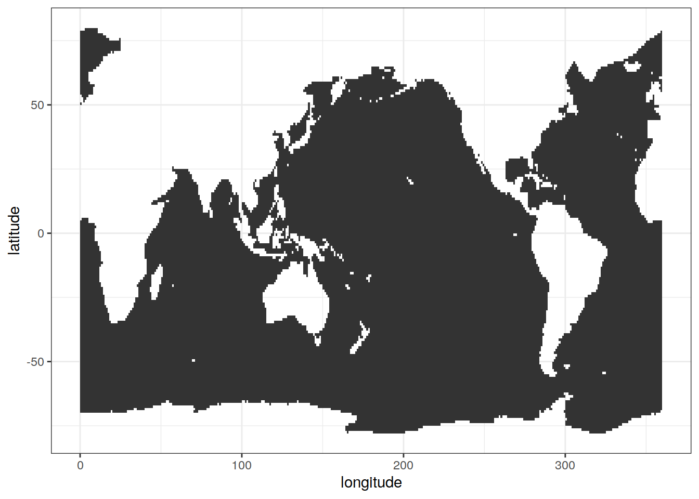
gruber_reopen_integrated <- gruber_reopen %>%
mutate(dcant_vol = dcant * volume) %>%
group_by(longitude, latitude) %>%
summarise(dcant_col_inv = sum(dcant_vol)) %>%
ungroup()
gruber_reopen_integrated <- gruber_reopen_integrated %>%
mutate(surf_area = earth_surf(lat = latitude, lon = longitude),
dcant_col_inv_area = dcant_col_inv / surf_area)
gruber_reopen_integrated %>%
ggplot(aes(longitude, latitude, fill = dcant_col_inv)) +
geom_tile() +
scale_fill_viridis_c() +
coord_quickmap(expand = 0)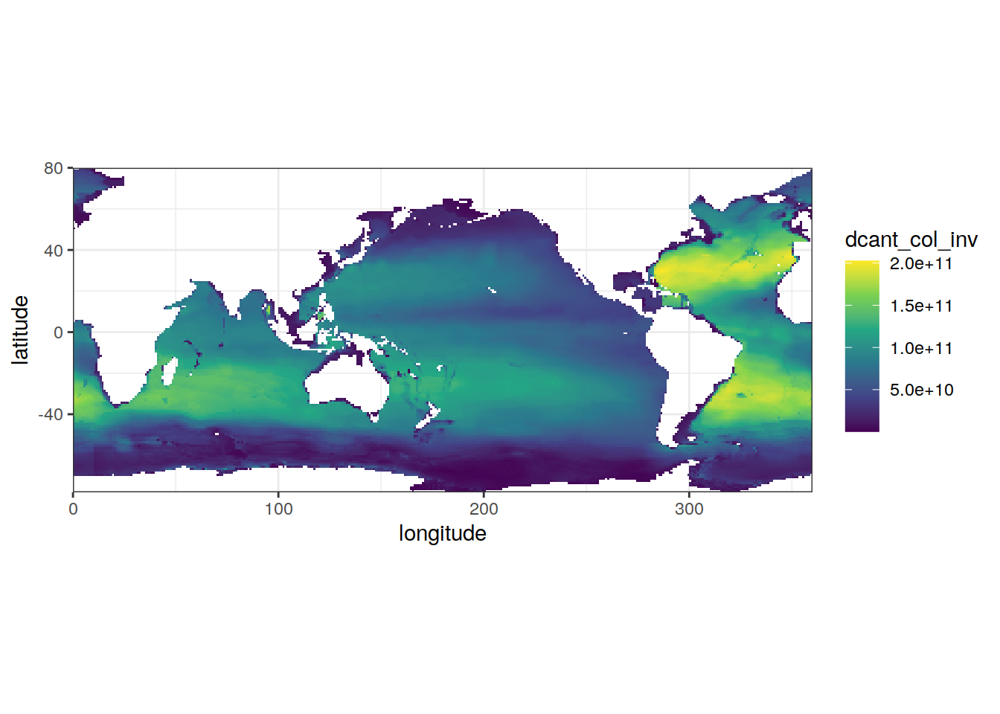
gruber_reopen_integrated %>%
ggplot(aes(longitude, latitude, fill = dcant_col_inv_area)) +
geom_tile() +
scale_fill_viridis_c() +
coord_quickmap(expand = 0)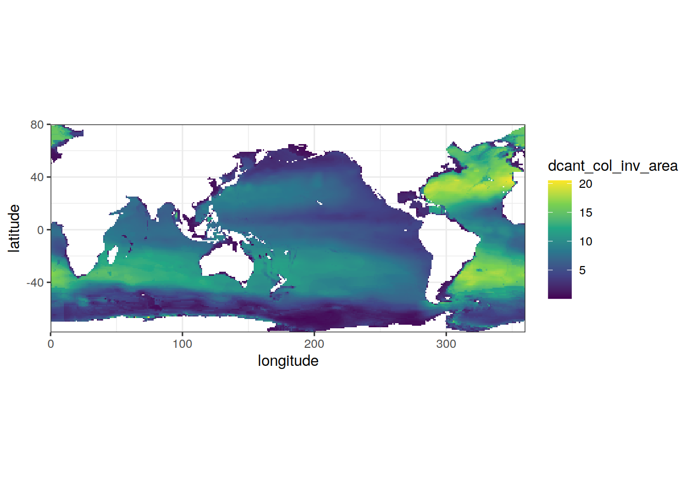
gruber_reopen_integrated %>%
ggplot(aes(longitude, latitude, fill = surf_area)) +
geom_tile() +
scale_fill_viridis_c() +
coord_quickmap(expand = 0)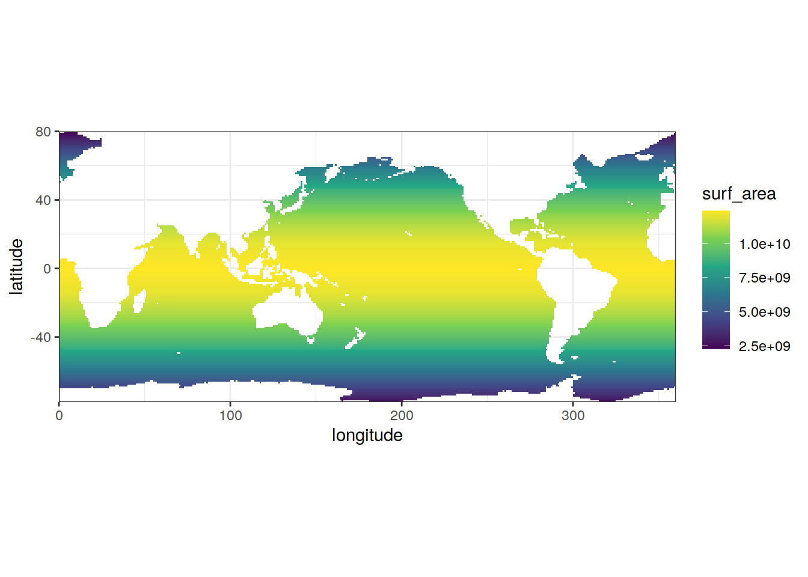
sessionInfo()R version 4.1.2 (2021-11-01)
Platform: x86_64-pc-linux-gnu (64-bit)
Running under: openSUSE Leap 15.3
Matrix products: default
BLAS: /usr/local/R-4.1.2/lib64/R/lib/libRblas.so
LAPACK: /usr/local/R-4.1.2/lib64/R/lib/libRlapack.so
locale:
[1] LC_CTYPE=en_US.UTF-8 LC_NUMERIC=C
[3] LC_TIME=en_US.UTF-8 LC_COLLATE=en_US.UTF-8
[5] LC_MONETARY=en_US.UTF-8 LC_MESSAGES=en_US.UTF-8
[7] LC_PAPER=en_US.UTF-8 LC_NAME=C
[9] LC_ADDRESS=C LC_TELEPHONE=C
[11] LC_MEASUREMENT=en_US.UTF-8 LC_IDENTIFICATION=C
attached base packages:
[1] stats graphics grDevices utils datasets methods base
other attached packages:
[1] ncdf4_1.19 stars_0.5-5 sf_1.0-5 abind_1.4-5
[5] tidync_0.2.4 colorspace_2.0-2 marelac_2.1.10 shape_1.4.6
[9] ggforce_0.3.3 metR_0.11.0 scico_1.3.0 patchwork_1.1.1
[13] collapse_1.7.0 forcats_0.5.1 stringr_1.4.0 dplyr_1.0.7
[17] purrr_0.3.4 readr_2.1.1 tidyr_1.1.4 tibble_3.1.6
[21] ggplot2_3.3.5 tidyverse_1.3.1 workflowr_1.7.0
loaded via a namespace (and not attached):
[1] ellipsis_0.3.2 class_7.3-20 rgdal_1.5-28 rprojroot_2.0.2
[5] fs_1.5.2 rstudioapi_0.13 proxy_0.4-26 farver_2.1.0
[9] bit64_4.0.5 fansi_1.0.2 lubridate_1.8.0 xml2_1.3.3
[13] codetools_0.2-18 knitr_1.37 polyclip_1.10-0 jsonlite_1.7.3
[17] gsw_1.0-6 broom_0.7.11 dbplyr_2.1.1 compiler_4.1.2
[21] httr_1.4.2 backports_1.4.1 assertthat_0.2.1 fastmap_1.1.0
[25] cli_3.1.1 later_1.3.0 tweenr_1.0.2 htmltools_0.5.2
[29] tools_4.1.2 gtable_0.3.0 glue_1.6.0 Rcpp_1.0.8
[33] cellranger_1.1.0 jquerylib_0.1.4 RNetCDF_2.5-2 raster_3.5-11
[37] vctrs_0.3.8 lwgeom_0.2-8 xfun_0.29 ps_1.6.0
[41] rvest_1.0.2 lifecycle_1.0.1 ncmeta_0.3.0 terra_1.5-12
[45] oce_1.5-0 getPass_0.2-2 MASS_7.3-55 scales_1.1.1
[49] vroom_1.5.7 hms_1.1.1 promises_1.2.0.1 parallel_4.1.2
[53] RColorBrewer_1.1-2 yaml_2.2.1 sass_0.4.0 stringi_1.7.6
[57] highr_0.9 e1071_1.7-9 checkmate_2.0.0 rlang_1.0.2
[61] pkgconfig_2.0.3 lattice_0.20-45 evaluate_0.14 SolveSAPHE_2.1.0
[65] labeling_0.4.2 bit_4.0.4 processx_3.5.2 tidyselect_1.1.1
[69] seacarb_3.3.0 magrittr_2.0.1 R6_2.5.1 generics_0.1.1
[73] DBI_1.1.2 pillar_1.6.4 haven_2.4.3 whisker_0.4
[77] withr_2.4.3 units_0.7-2 sp_1.4-6 modelr_0.1.8
[81] crayon_1.4.2 KernSmooth_2.23-20 utf8_1.2.2 tzdb_0.2.0
[85] rmarkdown_2.11 grid_4.1.2 readxl_1.3.1 isoband_0.2.5
[89] data.table_1.14.2 callr_3.7.0 git2r_0.29.0 reprex_2.0.1
[93] digest_0.6.29 classInt_0.4-3 httpuv_1.6.5 munsell_0.5.0
[97] viridisLite_0.4.0 bslib_0.3.1